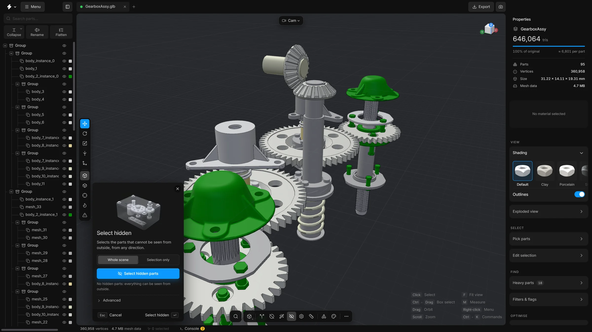
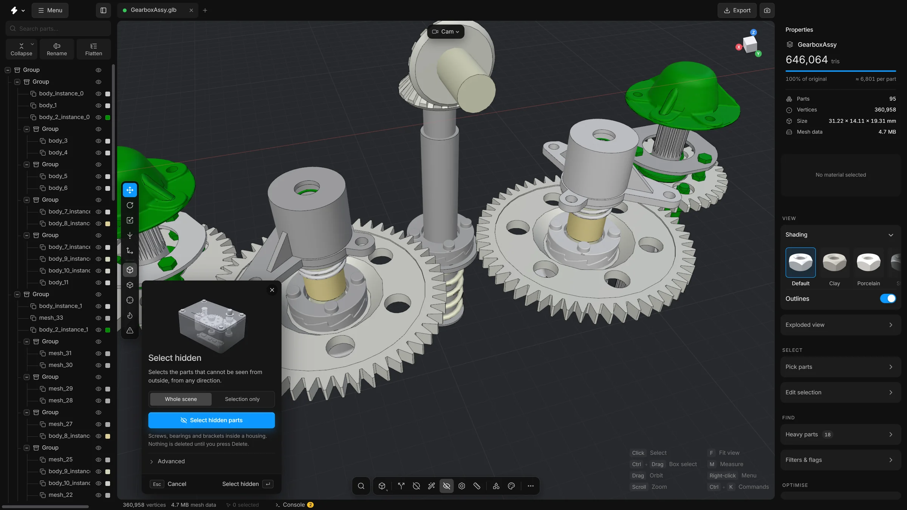

Select hidden partsv2
Find every part that cannot be seen from outside the model, such as screws inside a housing, and delete them in one step.
Much of an assembly is inside it: the screws in a housing, the board under a cover, a bearing in its seat. If the model is only ever seen from outside, those parts are dead weight. This command looks at the model from every side and selects the parts that never show.
On the gearbox used in these pictures it finds nothing, because every part can be seen from outside, and the card says so. On an assembly with a housing it finds what is inside it. On a bigger assembly there are usually many more.


When to use it
When the model will be shown closed, from outside. Not when someone will open a cover, look through a window in the casing, or show an exploded view.
Steps
- Click the Select hidden parts button on the bottom toolbar. You can also find it in the
…list or with the search. Its panel opens at the bottom left of the viewport. - Leave Whole scene chosen.
- Press Select hidden parts, or Enter.
- The hidden parts are selected. Properties shows how many triangles they hold.
- Press Isolate in the panel to look at them on their own. Check that nothing you need is among them.
- Press Delete in the panel to remove them.


What the options mean
- Whole scene / Selection only
- Check every visible part, or only the parts you selected. With Selection only, the rest of the scene still counts as something that hides them.
- Accuracy
- Under Advanced. How many directions the scene is looked at from: Fast, Normal or Thorough. More directions find parts that show only through a narrow gap, and take longer.
- See-through parts hide what is behind
- Off: a see-through part, such as glass or a clear cover, hides nothing, so what is behind it counts as visible. On: it hides what is behind it like any other part.
- Add to the selection
- Keeps what is selected now and adds the hidden parts to it.
- Largest part, of model size
- Keeps only hidden parts up to this share of the model’s size. Empty means any size.
- Name contains
- Keeps only hidden parts whose name contains this text, such as
screworbearing. Empty means any name.
Undo
Selecting changes nothing. The delete is one undo step: CtrlZ.
Tips
- Show all parts first (AltH). The check looks at visible parts.
- If a part that you can see through a small opening was selected, run it again with Accuracy on Thorough.
- To remove only the hidden fasteners and keep hidden structure, type part of their name in Name contains, or set a small value in Largest part, of model size.
Smart optimise runs this command as one of its steps, Hidden parts, with its usual settings.